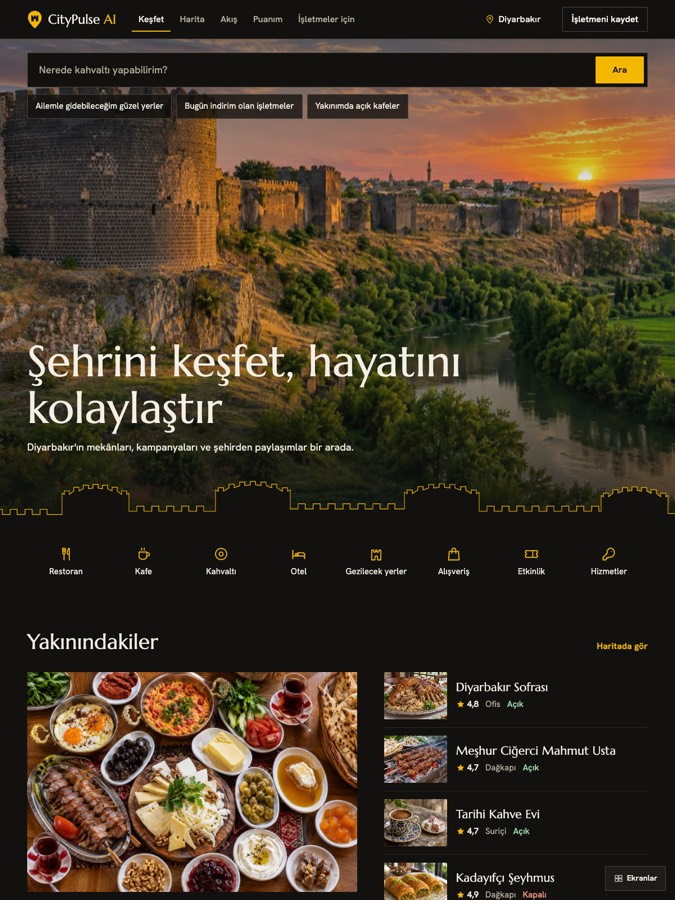

Seçenek 1Bazalt ve Altın
Son görselinizdeki siyah ve altını Diyarbakır surlarının bazalt taşıyla ve akşam ışığıyla kurduk. Açılışta tam ekran sur fotoğrafı ve günlük dille arama var, fotoğraf altın bir burç çizgisiyle sayfaya bağlanıyor. Marka etkisi en güçlü seçenek.
Seçenek 1'i incele